SENA
( Servicio Nacional De Aprendizaje )
ADSI
( Analisis & Desarrollo De Sistemas De Informacion )
CIENAGA
( Magdalena )
2019
importancia de git
Antes que nada tenemos que saber que es
git es un sistemas de control de versiones diseñado por
Linus torvalds
pensando en la eficiencia y la confiabilidad
Su propósito es llevar registro de los
cambios en archivos de computadora y coordinar el trabajo que varias personas realizan
sobre archivos compartidos.
historia de git
Al principio, Git se pensó como un motor de bajo nivel sobre el cual otros pudieran escribir
la interfaz de usuario o front end como Cogito o StGIT.
Sin embargo, Git se ha convertido desde
entonces en un sistema de control de versiones con funcionalidad plena. Hay algunos proyectos
de mucha
relevancia que ya usan Git, en particular, el grupo de programación del núcleo Linux.
importancia de github
Github es una herramienta que resultan imprescindibles para un programador o diseñador
tiene como objetivo principal
alojar proyectos de codigo abierto que emplea el sistema de versiones git.
es muy importante ya que permite trabajar
de manera remota y ordenada sin necesidad de emplear otras
herramientas
historia de github
Le genial plataforma GitHub fue creada por Chris Wanstrath , PJ Hyett , Tom Preston-Werner y Scott Chacon
ayá por Febrero de 2008 en San Francisco – EEUU
y hasta la fecha sigue estando ubicada en el mismo lugar.
En Febrero de 2009 los integrantes de la compañía anuncian en una entrevista para Yahoo que GitHub
ya había
alcanzado más de 46 mil repositorios públicos, una buena cantidad que indicaba la popularidad que se iba a
venir para Github
Acontinuacion un breve tutorial de como instalar git en nuestro ordenador
tendremos que entrar en nuestro navegador preferido una vez hay tenemos
escribir el nombre git para encontrar
su sitio web.
Ahora procederos a descargar el programa de acuerdo a las carectersiticas de nuestro ordenador
y el sistema operativo Que en este caso es windows.
seguido de esto señalaremos el lugar en
el que almacenara la descarga una vez se descargue le damos en ejecutar
miraremos los terminos y condiones y señalarenos donde se iniciara la instalacion
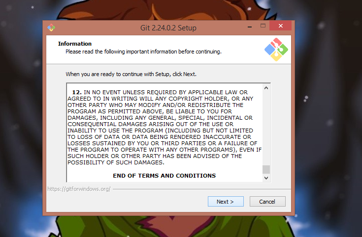 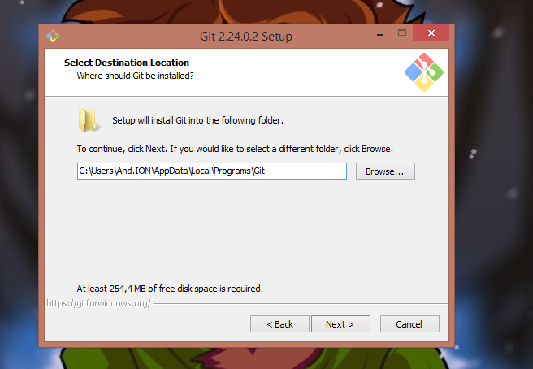le daremos sigiente y de acuerdo a nuestro gusto selecccionaremos alguna opcion
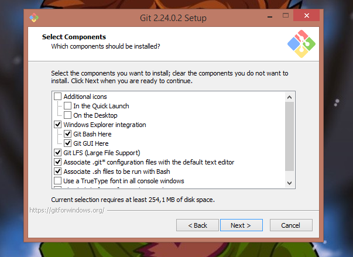 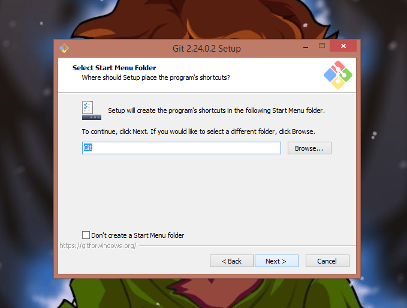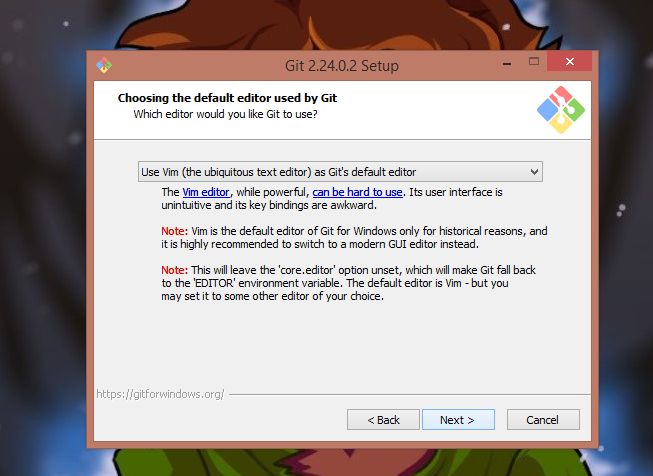 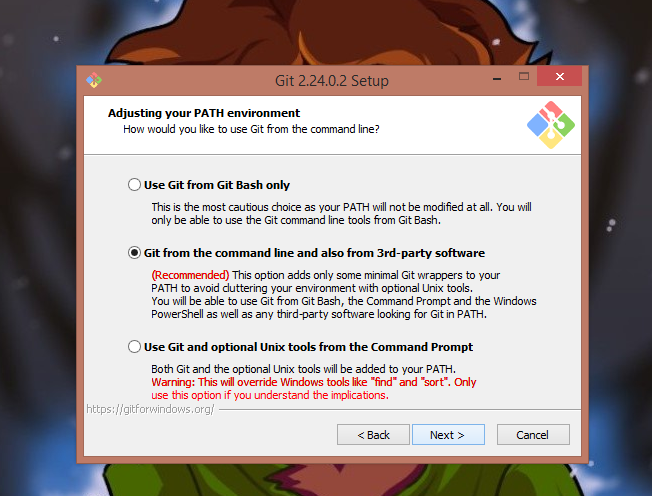
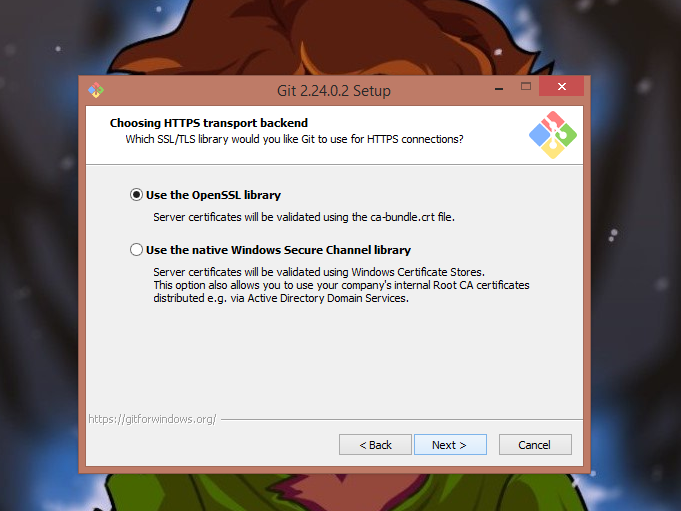 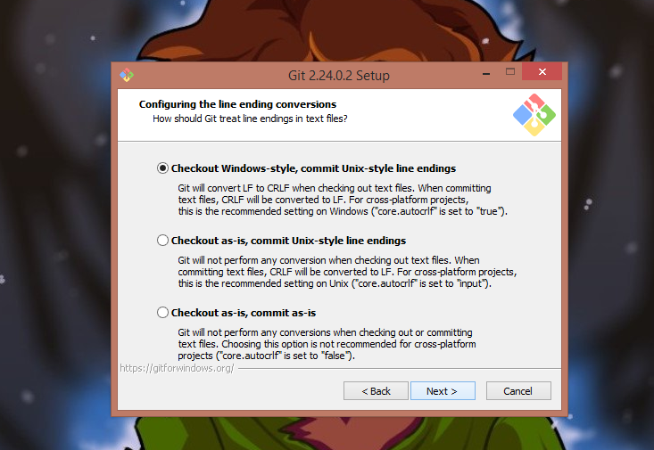
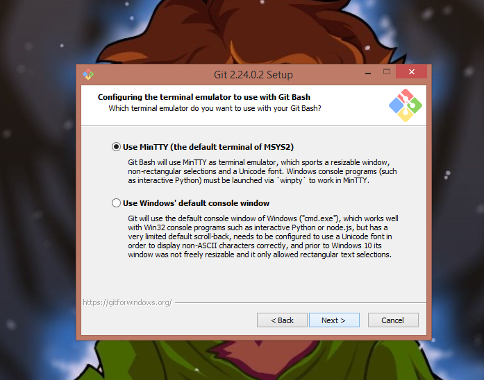 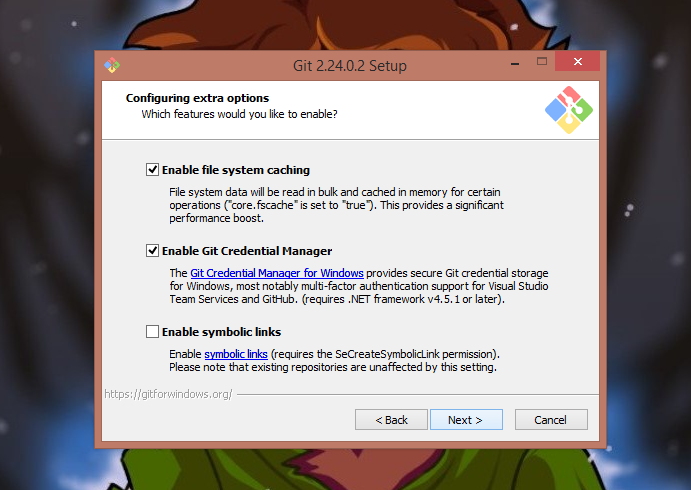
una vez hecho todo ese proceso le daremos en instalar
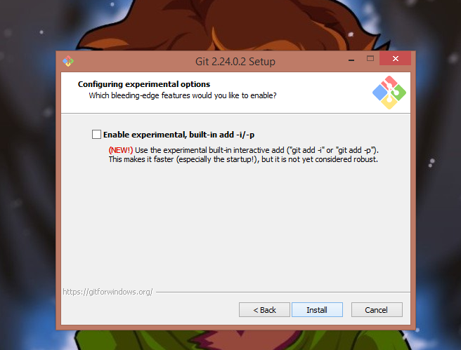 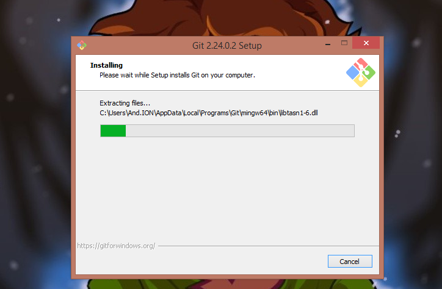una vez se finalice la instalacion lo iniciaras y abrira una pestaña en el anvegador donde te brindara una informacion respecto a git
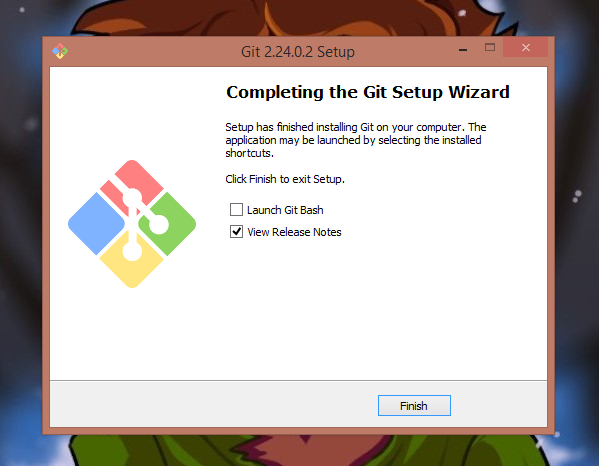 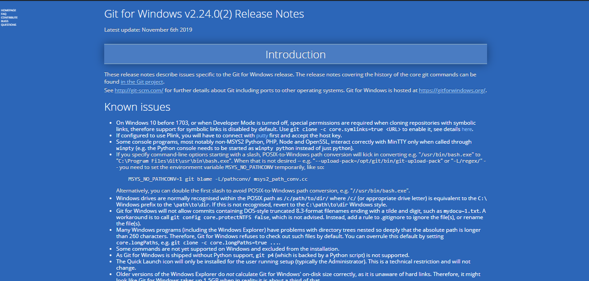git init
crear repositorio
git status
estado del repositorio
git add
añadir un arhivo al staging area
git add -A
añade todos los archivos
git add .
añade todos los archivos
git rm --cached
nos devolvemos un paso (del staging area a working area)
git reset HEAD
idem anterior
git rm -f
elimina el archivo por completo
git add -n
muestra si el archivo existe en el staging area (si no esta informa, y si esta no hace nada)
git commit
añadir un commit

En esta lista se encontrar una variedad de comandos de git cmd que son los sigientes :
assoc
muestra o modifica las acciones de las extenciones del archivo
break
establece o elimina la comprobacion extendida de crl+c
bcdedit
establece propiedades en la base de datos de arranque para controlar la carga del arranque
cals
muestra o modifica las listas de control de acceso (ACLs)
cd
muestra el nombre del directorio actual o cambia a otro directorio
chcp
muestra o establece el nomero de pagina de codigos activa
chdir
muestra el nombre del directorio actual o cambia a otro directorio
chkdsk
comprueba un disco y muestra un informe de su estado
chkntfs
muestra o modfica la comprobacion de disco al arrancar
cls
borra la pantalla
cmd
inicia una nueva instancia del interprete de comandos
color
establece los colores de primer interprete de comandos de windows
comp
compara el contenido de dos archivos o un conjunto de archivos en particiones NTFS
convert
convierte volumenes fat a volumenes ntfs. no puede convertir la unidad actual
copy
copia uno o mas archivos en otra ubicacion
date
muestra o establece la fecha
del
elimina uno o mas archivos
dir
muestra una lista de archivos y subdirectorios en un directorio
diskcomp
compara el contenido de dos disquetes
diskcopy
copia el contenido de un disuqte en otro
diskpart
muestra o configura las propiedades de particion de disco
doskey
edita lineas de comando, memoriza comandos de windows y crea marcos
driverquery
muestra el estado y las propiedades actuales del controlador de dispositivo
echo
muestra mensajes, o activa y desactiva el eco
endlocal
termina la busqueda de variables de entorno del archivo por lotes
erase
elimina uno o mas archivos
exit
sale del programa cdm.exe ( interfaz de comando )
fc
compara dos archivos o conjunto de archivos y muestra las diferencias entre ellos
A continuacion encontraras un video explicativo de como subir tu proyecto a github facil y sencillo
A continuacion encontraras un video explicativo de como subir tu proyecto a github de una forma mas compleja es la forma que por lo general deberia ser usada
La mayoria de la informacion expuesta aqui no es de mi autoria, ni mucho menos tengo el permiso para difundirla por lo mismo en caso de querer acceder a las paginas de informacion que se uso para realizar este trabajo se les dejara a continuacion.